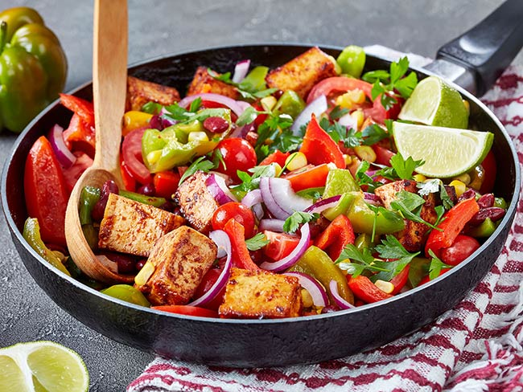

Home
Fiesta Tofu Recipe

Description
Quick Meal that has a lot of flavor. goes well with sliced avocado and whole-grain tortillas!
Ingredients
- 1 block of extra firm tofu
- kernels from 1 ear of cooked corn
- 1 15-ounce can low-sodium black beans
- 1/2 teaspoon cumin
- 2 teaspoons reduced-sodium taco seasoning
- 1 teaspoon garlic powder
- 1/2 large red bell pepper, diced
- 1/2 large green bell pepper, diced
- 1/2 lime, juiced
- 2 tablespoons cilantro
- black pepper to taste
Directions
- Drain the tofu by wrapping the block in a paper towel and putting some weight on top (such as a coffee cup filled with water) for about 10 minutes
- Cut the tofu block in small 1/2- to 1-inch squares. Season with black pepper as desired.
- In a grill pan or iron clad pan, cook the tofu squares on medium-high heat. Stir and flip to allow browning on all sides. Once done, set aside.
- In a pan, mix the black beans, corn, taco seasoning, garlic powder, and cumin. Cook for about 5 to 7 minutes, mixing to combine ingredients well.
- Add the green and red bell pepper and cook for another 3 minutes or as desired for texture.
- Add the cooked tofu to the mix and cook for another minute or two.
- Remove from heat. Add the cilantro and lime juice.